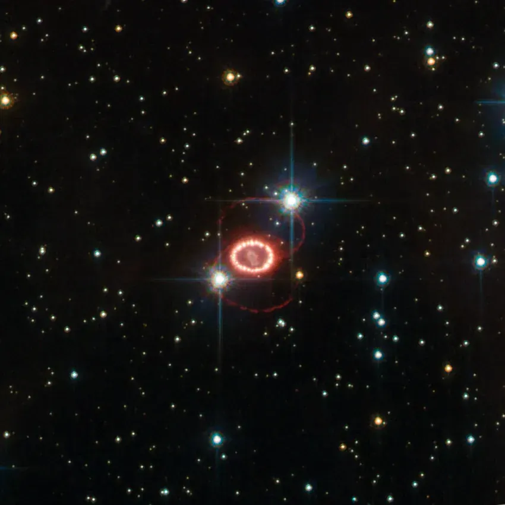
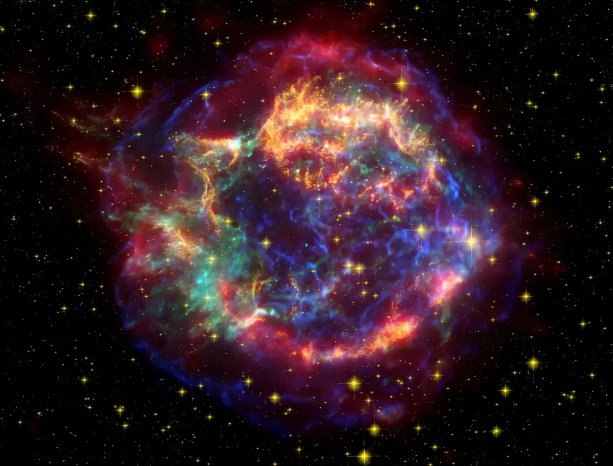
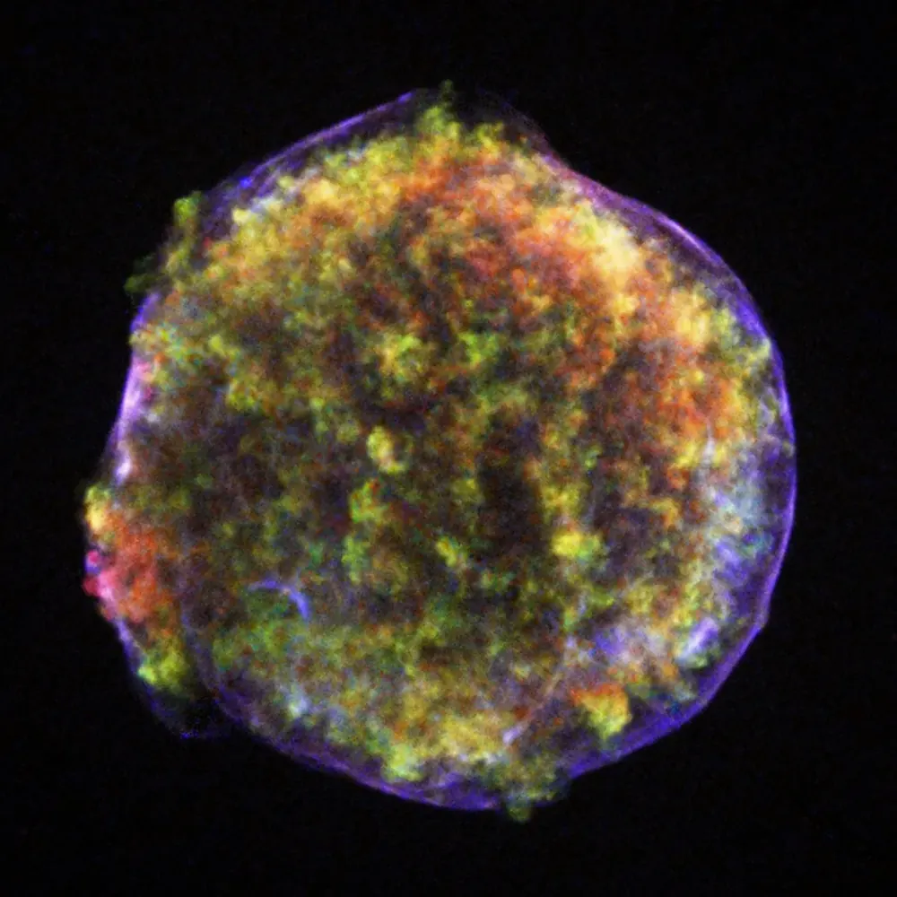

Supernovae
For a few weeks one exploding star can outshine a whole galaxy.

📷 NASA, ESA, J. Hester and A. Loll (Arizona State University) · Public domain

📷 ESA/Hubble & NASA · CC BY 4.0

📷 NASA/JPL-Caltech/O. Krause (Steward Observatory) · Public domain

📷 NASA/CXC/Rutgers/J. Warren & J. Hughes et al. · Public domain
Two ways to explode
Core collapse (Type II and others)
A star of more than about 8 Suns builds an iron core. When the core reaches about 1.4 Suns it can no longer hold itself up and collapses in under a second, from the size of Earth to about 20 km. The falling layers bounce off it and a blast wave, pushed by a flood of neutrinos, tears the star apart.
White dwarf explosion (Type Ia)
A white dwarf in a pair of stars pulls gas from its partner, or merges with another white dwarf. When it gets close to about 1.4 Suns, carbon fusion runs away all at once and the whole star blows up, leaving nothing behind.
How bright?
A supernova can shine as brightly as billions of Suns for weeks. Type Ia explosions all peak at nearly the same brightness, so astronomers use them as measuring sticks for distance. In 1998 they showed that the expansion of the universe is speeding up.
You are made of star stuff
The Big Bang made almost only hydrogen and helium. The carbon in your cells, the oxygen you breathe, the calcium in your bones and the iron in your blood were made inside stars and spread through space when they died. Many heavier elements, such as gold, come from colliding neutron stars and rare kinds of supernova.
Famous supernovae
| Year seen | Name | What happened |
|---|---|---|
| 1054 | SN 1054 | Recorded by Chinese astronomers, bright enough to see in daylight for 23 days. Its remains are the Crab Nebula. |
| 1572 | Tycho’s supernova | Studied by Tycho Brahe; it showed that the sky beyond the Moon can change. |
| 1604 | Kepler’s supernova | The last one seen with the eyes in our own galaxy. |
| ~1680 | Cassiopeia A | Hidden by dust, almost nobody saw it, but its glowing shell is one of the brightest radio sources in the sky. |
| 1987 | SN 1987A | In the Large Magellanic Cloud, 168,000 light-years away. Detectors on Earth caught its neutrinos hours before the light. |
Will one hurt us?
Only a supernova within roughly 50 light-years could harm life on Earth, and no star that close is able to explode. Betelgeuse, about 550 light-years away, will be a spectacular sight: as bright as a half Moon for weeks, visible in daylight, but harmless.